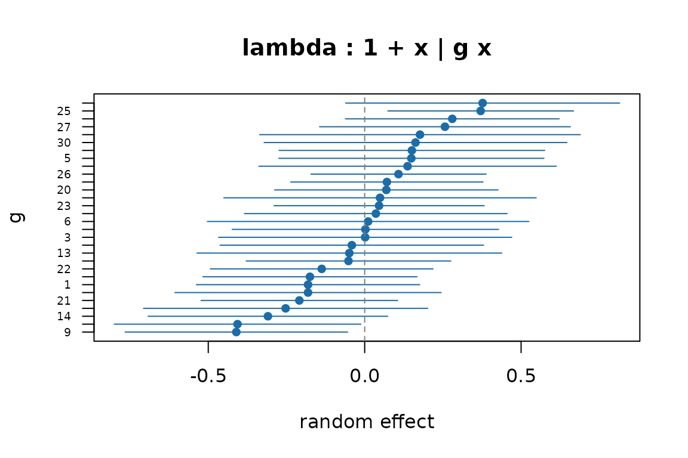

Hierarchical and longitudinal models
Source:vignettes/hierarchical-longitudinal.Rmd
hierarchical-longitudinal.Rmd
library(regcompR)
#>
#> Attaching package: 'regcompR'
#> The following object is masked from 'package:base':
#>
#> capabilitiesRandom effects can enter any distribution parameter. Models are
fitted by the Laplace approximation (engine = "ml" or the
faster engine = "tmb") or by MCMC
(engine = "bayes"). Marginal models are fitted by
generalized estimating equations or with cluster robust covariances.
Random intercepts and slopes
The syntax follows lme4: (1 | g) for a random intercept,
(1 + x | g) for correlated intercepts and slopes,
(1 + x || g) for independent ones, (1 | a/b)
for nested and (1 | a) + (1 | b) for crossed factors.
G <- 30; m <- 8
dat <- data.frame(g = factor(rep(1:G, each = m)), x = rnorm(G * m))
u <- rnorm(G, 0, 0.6); v <- rnorm(G, 0, 0.3)
dat$y <- rpois(G * m, exp(0.5 + (0.4 + v[dat$g]) * dat$x + u[dat$g]))
fit <- regcomp(y ~ x + (1 + x | g), family = "poisson", data = dat)
summary(fit)
#> <regcomp_fit> Poisson regression, engine 'ml' (frequentist)
#> marginal likelihood approximation: laplace
#> lambda (log link): ~x + (1 + x | g)
#> log likelihood -417.032 on 5 parameters, n = 240
#>
#> Wald estimates with 95% confidence intervals:
#> estimate std_error lower upper z
#> lambda:(Intercept) 0.5495 0.0885 0.3760 0.7230 6.2082
#> lambda:x 0.5157 0.0799 0.3591 0.6723 6.4524
#> lambda:1 + x | g:log_sd((Intercept)) -0.9795 0.2038 -1.3789 -0.5801 -4.8065
#> lambda:1 + x | g:log_sd(x) -1.2338 0.2799 -1.7824 -0.6853 -4.4086
#> lambda:1 + x | g:chol(x,(Intercept)) -0.0504 0.3680 -0.7717 0.6708 -0.1370
#> p_value
#> lambda:(Intercept) 0.000
#> lambda:x 0.000
#> lambda:1 + x | g:log_sd((Intercept)) 0.000
#> lambda:1 + x | g:log_sd(x) 0.000
#> lambda:1 + x | g:chol(x,(Intercept)) 0.891
#> Hessian positive definite
head(ranef_regcomp(fit)[[1]])
#> $`1 + x | g`
#> (Intercept) x
#> 1 0.583953976 -0.180976405
#> 2 0.478774418 0.280039187
#> 3 -0.285989477 0.001552737
#> 4 -0.210818050 0.376993659
#> 5 0.335895388 0.149174549
#> 6 -0.473180263 0.010998947
#> 7 -0.113398016 -0.406484209
#> 8 -0.062552842 -0.051806010
#> 9 -0.096982088 -0.410287669
#> 10 0.302163886 0.137121741
#> 11 0.013591208 -0.181106309
#> 12 -0.041372550 0.035688315
#> 13 0.124967758 -0.049013675
#> 14 -0.017122395 -0.309309737
#> 15 0.004757044 -0.252649088
#> 16 0.414068748 -0.040985010
#> 17 -0.526187795 0.176747768
#> 18 -0.033390871 0.150887666
#> 19 0.081504511 0.070936374
#> 20 -0.273611486 0.069174825
#> 21 0.321336643 -0.208833897
#> 22 0.026062551 -0.137347280
#> 23 0.021894404 0.045967167
#> 24 -0.041580489 0.002327874
#> 25 0.834488983 0.370676919
#> 26 0.028325640 0.108110993
#> 27 -0.019605533 0.256644911
#> 28 -0.327088361 0.049023344
#> 29 -0.024225317 -0.174958803
#> 30 -0.328385550 0.162459676
plot(fit, which = "ranef")

The estimates, standard errors and log likelihood agree with lme4 and glmmTMB for the families they share.
Random effects in other parameters
A random effect in the dispersion gives a model in which the clusters differ in variability as well as in level.
Covariance structures for longitudinal data
Structured random effects describe serial correlation within subjects:
-
ar1(0 + time | id): first order autoregressive over a factor of times; -
cs(0 + time | id),homcs(): compound symmetry; -
diag(),homdiag(),us(): diagonal and unstructured; -
ou(t | id),exp(t | id),gau(t | id),matern32(t | id): continuous time (Ornstein Uhlenbeck) and spatial kernels on numeric times or coordinates.
Tn <- 6; N <- 40
long <- data.frame(id = factor(rep(1:N, each = Tn)), time = factor(rep(1:Tn, N)),
t = rep(1:Tn, N), x = rnorm(N * Tn))
e <- unlist(lapply(1:N, function(i) as.numeric(arima.sim(list(ar = 0.6), Tn, sd = 0.8))))
long$y <- 1 + 0.5 * long$x + e + rnorm(N * Tn, 0, 0.3)
f_ar1 <- regcomp(y ~ x + ar1(0 + time | id), family = "normal", data = long, engine = "tmb")
f_ou <- regcomp(y ~ x + ou(t | id), family = "normal", data = long, engine = "tmb")
c(ar1 = AIC(f_ar1), ou = AIC(f_ou))
#> ar1 ou
#> 665.8609 665.8609With equally spaced times the two models coincide
(rho = exp(-1 / range)), so their AIC values agree; the OU
form also handles irregular times.
The TMB engine uses automatic differentiation and is much faster for large multilevel models; it gives the same estimates as the default engine.
Multiple membership
mm(g1, g2, weights = cbind(w1, w2)) lets an observation
belong to several groups with given weights, as in school mobility
models.
mmd <- data.frame(s1 = factor(sample(1:15, 200, TRUE)), s2 = factor(sample(1:15, 200, TRUE)),
w1 = 0.6, w2 = 0.4, x = rnorm(200))
eff <- rnorm(15, 0, 0.7)
mmd$y <- rnorm(200, 1 + mmd$x + 0.6 * eff[mmd$s1] + 0.4 * eff[mmd$s2], 1)
fmm <- regcomp(y ~ x + (1 | mm(s1, s2, weights = cbind(w1, w2))), family = "normal", data = mmd)
fmm$theta
#> mu:1 | mm(s1, s2, weights = cbind(w1, w2)):log_sd((Intercept))
#> -0.6498188Marginal models
Population averaged effects come from generalized estimating equations with independence, exchangeable, AR(1) or unstructured working correlations, with results equal to geepack.
gee(y ~ x, data = dat, id = g, family = poisson(), corstr = "exchangeable")
#> <regcomp_gee> poisson(log), exchangeable working correlation, 30 clusters
#> estimate robust_se z
#> (Intercept) 0.6425348 0.08650442 7.427768
#> x 0.5016570 0.07146660 7.019460
#> correlation 0.1899 scale 1.5815Any likelihood fit gets cluster robust standard errors:
Discrete time survival and frailty
person_period() expands survival data to one row per
subject and period; a binary model with a random intercept is a frailty
model. The logit link gives the proportional odds model;
links = list(prob = "cloglog") gives grouped proportional
hazards.
n <- 400
sd0 <- data.frame(id = 1:n, cl = factor(rep(1:40, 10)), x = rnorm(n))
tev <- rgeom(n, plogis(-1.5 + 0.5 * sd0$x + rnorm(40, 0, 0.5)[sd0$cl])) + 1
sd0$t <- pmin(tev, 8); sd0$d <- as.numeric(tev <= 8)
pp <- person_period(sd0, "t", "d")
fh <- regcomp(event ~ factor(period) + x + (1 | cl), family = "bernoulli", data = pp)
coef(fh)["prob:x"]
#> prob:x
#> 0.5543754